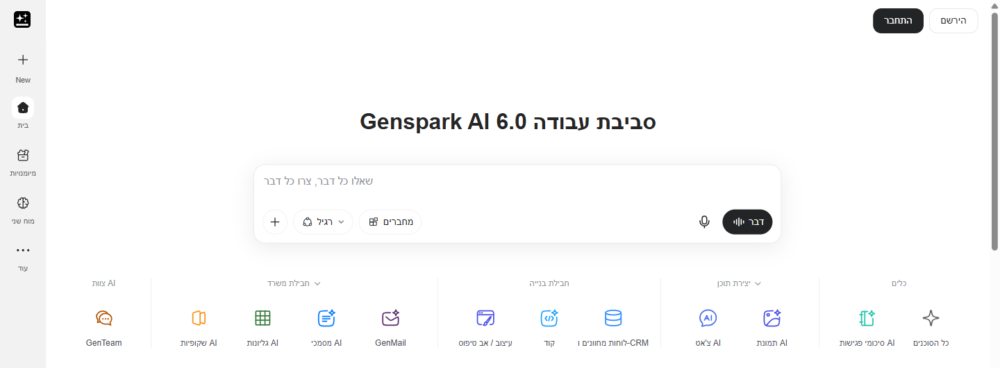
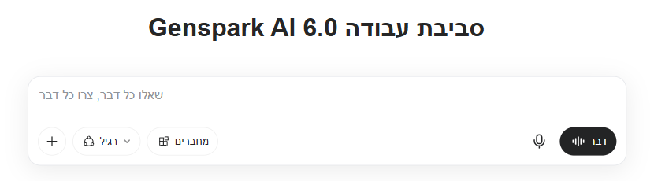
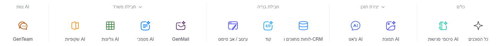

שקופיות AI
מצגת מתיאור קצר. כותבים נושא, קהל ומספר שקפים, ומקבלים טיוטה מעוצבת שאפשר להמשיך לערוך.
חדש: Guide Mode. ה-AI שואל כמה שאלות לפני שהוא בונה.
מבקשים פעם אחת,
מקבלים תוצר
מצגת, מסמך, גיליון, תמונה וסיכום פגישה.
הכל מתיבה אחת, בעברית.
במקום לעבור בין אתרים, כותבים בקשה אחת ובוחרים איזה תוצר רוצים.
"שאלו כל דבר, צרו כל דבר". שאלה, טקסט, תמונה או סרטון, מאותו מקום.
שקופיות AI, מסמכי AI וגליונות AI. מצגת, מסמך או טבלה מתיאור קצר.
בקשה בכמה שלבים: קודם לחקור נושא, ואחר כך לבנות ממנו מצגת לישיבת צוות.
הממשק מופיע בעברית, ויש מרכז עזרה מלא בעברית. כותבים את הבקשות בעברית רגילה.
שלושה צעדים, ואפשר להתחיל בתוכנית החינמית.
מהדפדפן במחשב או בטלפון.
הכפתור בפינה העליונה של המסך. אם כבר יש לכם חשבון, לוחצים "התחבר".
או בוחרים כלי מהשורה שמתחת לתיבה, למשל "שקופיות AI".
השימוש מגיל 18, ומתחת לגיל 18 רק באישור הורה. אין הנחה לחינוך. לכן זה כלי לצוות, לא לתלמידים.
בראש המסך: "סביבת עבודה Genspark AI 6.0". שלושה מקומות מספיקים כדי להתחיל.
בתיבה "שאלו כל דבר, צרו כל דבר".
ברירת המחדל היא "רגיל". מתחילים ממנה.
יצירת מצגת, בקבוצה "חבילת משרד".

כאן מתחילה כל עבודה. אפשר גם לדבר: הכפתור "דבר" בצד התיבה מקבל בקשה בקול.
בעברית, במשפט או שניים: מה התוצר, למי ולמה.
כפתור ה-+ מוסיף קבצים ועוד אפשרויות.
"רגיל" מספיק לרוב המשימות.

מתחת לתיבה הכלים מסודרים בקבוצות: כלים, יצירת תוכן, חבילת בנייה, חבילת משרד וצוות AI.

מצגת מתיאור קצר.
מסמך, מכתב או סיכום.
הרשימה המלאה של הכלים.
צילומי המסך צולמו לפני התחברות. אחרי שנכנסים לחשבון הסידור יכול להשתנות מעט.
2
ממצגת ומסמך, דרך תמונה וסרטון, ועד סיכום של ישיבה.
לוחצים על להב, והוא נפתח לכרטיס. בשקפים הבאים כל להב בפירוט.
מצגת מתיאור קצר. כותבים נושא, קהל ומספר שקפים, ומקבלים טיוטה מעוצבת שאפשר להמשיך לערוך.
חדש: Guide Mode. ה-AI שואל כמה שאלות לפני שהוא בונה.
מסמך מסודר. מכתב להורים, נוהל לצוות או סיכום של תוכנית. מתארים, ומקבלים מסמך מוכן לעריכה.
בקבוצה "חבילת משרד".
טבלה מתיאור. לוח תורנויות, מעקב משימות של ההנהלה או רשימת ציוד לטיול.
בקבוצה "חבילת משרד".
באותו מקום. איור לדף עבודה, תמונה להזמנה לאירוע, או פתיח קצר לטקס.
סרטון הוא הפעולה היקרה ביותר בקרדיטים. מתחילים בתמונה.
ישיבה שהופכת לסיכום. מקליטים ישיבת צוות, ומקבלים תמלול וסיכום כתוב עם משימות.
רק בלי מידע על תלמידים, ובהסכמת כל המשתתפים.
לוחצים "שקופיות AI", כותבים נושא, קהל ומספר שקפים. לוחצים "העתקה" ומדביקים בתיבה.
איכות Standard או Ultra, וסגנון Professional או Creative. כדאי לנסות שני סגנונות על אותה בקשה.
לא בטוחים מה לבקש? במצב הזה ה-AI שואל כמה שאלות, ורק אז בונה את המצגת.
בודקים עובדות, שמות ותאריכים לפני שמציגים. ה-AI טועה לפעמים בביטחון מלא.
מספטמבר 2026 איכות Standard עובדת עם Gen-1 Slides, המודל של Genspark עצמה, בכל התוכניות וגם בחינמית.
בקבוצה "חבילת משרד" יש גם מסמכי AI וגליונות AI.
מכתב להורים, נוהל לצוות או סיכום של תוכנית. מתארים, ומקבלים מסמך מסודר לעריכה.
טבלה מוכנה מתיאור: לוח תורנויות, מעקב משימות או רשימת ציוד לטיול.
Genspark עובד גם בתוך Word, Excel ו-PowerPoint, במחשב ובדפדפן.
מוסיפים את התוסף מתוך התוכנה: בכרטיסייה "בית" לוחצים "תוספות", ומחפשים Genspark.
היום כולם חלק מאותה סביבת עבודה. לא צריך אתר נפרד לכל אחד.
בקבוצה "יצירת תוכן". איור לדף עבודה, תמונה להזמנה או לפוסט של בית הספר.
מבקשים בתיבה הראשית, או מוצאים ב"כל הסוכנים". מתאים לפתיח קצר לשיעור או לאירוע.
מנגינת רקע לסרטון, לטקס או למצגת של סוף שנה.
סרטון הוא הפעולה היקרה ביותר בקרדיטים, והמחיר תלוי באורך, באיכות ובמודל. בודקים את המחיר לפני ששולחים, ומתחילים בתמונה.
שני כלים שחוסכים הקלדה: הכתבה קולית וסיכום של פגישה.
אפליקציה נפרדת למחשב ולטלפון: מדברים, והטקסט נכתב בכל תוכנה. בחינם עד 4,000 מילים בשבוע. את העברית כדאי לבדוק לפני שסומכים עליה.
מקליטים ישיבה במחשב או בטלפון, ומקבלים תמלול וסיכום. אפשר גם לחבר יומן, ואז בוט מצטרף לפגישות Zoom, Meet או Teams.
מחברים יומן? מכבים את ההצטרפות האוטומטית (Auto-join), אחרת הבוט נכנס לכל פגישה ביומן. לא מקליטים ישיבות פדגוגיות, שיחות עם הורים או ועדות, ורק בהסכמת כל המשתתפים.
אפשר לבקש כמה שלבים ברצף. Genspark מבצע אותם אחד אחרי השני, ומחזיר תוצר אחד.
מה לחקור, מה לבנות ולמי זה מיועד.
קודם נאסף חומר, ואחר כך נבנה התוצר.
מבקשים שינויים בשיחה, ובודקים את המקורות.
ברקע: את המשימות האלה מנהל Super Agent, המנוע של Genspark. אתם רק כותבים בתיבה הראשית.
ChatGPT, Claude או Gemini מכינים את התוכן. Genspark הופך אותו לתוצר.
מגבשים בשיחה ראשי פרקים, מסרים או טבלת נתונים. שם נוח לחזור ולדייק.
מדביקים את התוכן בשקופיות AI, במסמכי AI או בגליונות AI, ומקבלים מצגת, מסמך או טבלה מעוצבים.
עובד עם כל צ'אט, בהעתקה והדבקה, בלי חיבור מיוחד. את הבדיקה הסופית עושים אתם: עובדות, שמות ועברית תקינה.
3
בלי הבטחות: מה מעולה, מה מוגבל, ומה עושים עם זה.
בדולרים. הכל עובד על קרדיטים.
100 קרדיטים ביום, עד תקרה כוללת לחשבון. מספיק כדי לנסות.
או 19.99$ לחודש בתשלום שנתי. המנוי ליחיד.
או 199.99$ בתשלום שנתי. למי שמשתמש הרבה מאוד.
לחודש, בתשלום שנתי (40$ בחודשי). לצוות של 2 עד 150 אנשים.
בתוכניות בתשלום, צ'אט ותמונות במודלים הבסיסיים לא עולים קרדיטים (עד מגבלה). המודלים המתקדמים וסרטונים כן עולים. אין הנחה לחינוך. לפני החלטה בודקים ב-genspark.ai/pricing.
שלושה מצבים שכולנו מכירים, ואיך מתחילים לפתור אותם.
בקשה אחת: לחקור את הנושא ולבנות ממנו מצגת פתיחה. נשאר רק לבדוק ולהתאים לכיתה.
מתארים את הנושאים בגליונות AI ומקבלים טבלת משימות. שקופיות AI הופכות אותה למצגת קצרה.
כותבים את העיקר בכמה נקודות, ומסמכי AI מסדרים אותו למכתב מנומס וברור.
לכל מי שצריך טיוטה טובה מהר, וממשיך ממנה בעצמו.
מצגת פתיחה לנושא חדש, דף מידע מסודר, ואיור לדף עבודה. התלמידים לא עובדים בכלי בעצמם.
מצגת לישיבת הנהלה, סקירה על נושא לפני החלטה, וטבלת משימות שנתית.
מכתבים להורים, לוח תורנויות, רשימות ציוד והזמנות לאירועים.
תכנון טיול, מצגת לאירוע משפחתי, או רשימת רעיונות מסודרת.
הממשק בעברית, והבקשות בעברית רגילה עובדות טוב.
בקשה טובה אומרת מה התוצר, מי הקהל ומה המטרה.
רמת המודל הבסיסית מספיקה לרוב המשימות.
סרטון מבקשים רק כשהבקשה כבר מדויקת.
בשקופיות AI בוחרים Guide Mode, וה-AI שואל אתכם קודם.
לא שמות, לא ציונים ולא הקלטות של ישיבות פדגוגיות.
לוחצים על שאלה כדי לפתוח את התשובה.
כן. הממשק מופיע בעברית, ויש מרכז עזרה מלא בעברית. כותבים בקשות בעברית, ואת התוצר תמיד מגיהים.
יש תוכנית חינמית עם 100 קרדיטים ביום, עד תקרה כוללת לחשבון. לשימוש קבוע יש מנוי Plus.
היחידה שבה משלמים על פעולות. סרטון הוא היקר ביותר, והמחיר שלו תלוי באורך ובאיכות.
השימוש מגיל 18, ומתחת לגיל 18 רק באישור הורה. ההמלצה: כלי לצוות בלבד.
לא. אין תוכנית או הנחה לחינוך.
כן, בהקלטה או עם בוט שמצטרף לפגישה. רק ישיבות בלי מידע על תלמידים, בהסכמת המשתתפים, ועם הצטרפות אוטומטית כבויה.
שלוש שאלות. נסו לענות בקול לפני שפותחים.
בשורת הכלים שמתחת לתיבה, בקבוצה "חבילת משרד": שקופיות AI.
סרטון. לכן מתחילים בתמונה, ובודקים את המחיר לפני ששולחים.
את ההצטרפות האוטומטית (Auto-join), כדי שהבוט לא ייכנס לכל פגישה ביומן.
4
לא צופים, עושים. פותחים מחשב או טלפון.
ב-genspark.ai, בכפתור "הירשם".
בשורת הכלים, בקבוצה "חבילת משרד".
נושא מהעבודה שלכם, קהל, ו-5 שקפים.
למשל: "פחות טקסט בשקף 2".
מגיהים, ושולחים למישהו מהצוות.
בסוף חמש הדקות יש לכל אחד טיוטת מצגת בעברית, מוכנה להגהה.
מצגת, מסמך, גיליון, תמונה וסיכום ישיבה, מאותו מסך ובעברית.
בתוכניות בתשלום צ'אט ותמונות במודלים הבסיסיים לא עולים קרדיטים (עד מגבלה). סרטון יקר, אז מבקשים אותו רק כשהבקשה מדויקת.
מגיל 18, בלי מידע על תלמידים, ותמיד מגיהים את התוצר.
פתחו חשבון, הכינו מצגת אחת, ושלחו אותה למישהו מהצוות.
ב-genspark.ai, בתוכנית החינמית.
שקופיות AI, בקשה אחת, תיקון אחד. רוצים משוב? שלחו לנו.